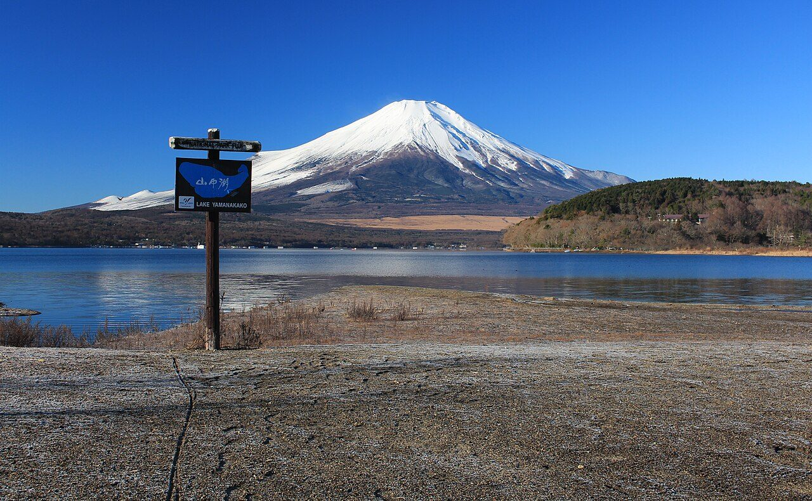

Japan, December 2026.
15–29 December 2026 · Osaka to Tokyo by car · seven of us
The route
- Reserved
Tue 15 → Wed 16 Dec · 1 night
Singapore
Citadines Connect City Centre
- Confirmed
Wed 16 → Thu 17 Dec · 1 night
Osaka
Citadines Namba Osaka
- Confirmed
Thu 17 → Sat 19 Dec · 2 nights
Ise-Shima
Hatago Vison
- Confirmed
Sat 19 → Sun 20 Dec · 1 night
Nagoya
Nagoya Marriott Associa
- Confirmed
Sun 20 → Wed 23 Dec · 3 nights
Lake Yamanaka
HOTEL SEION Fuji
- Confirmed
Wed 23 → Mon 28 Dec · 5 nights
Tokyo
Oakwood Premier Tokyo
- Confirmed
Mon 28 → Tue 29 Dec · 1 night
Singapore
Holiday Inn Express Singapore Clarke Quay